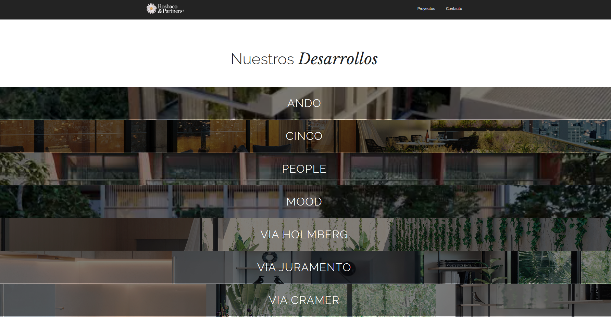
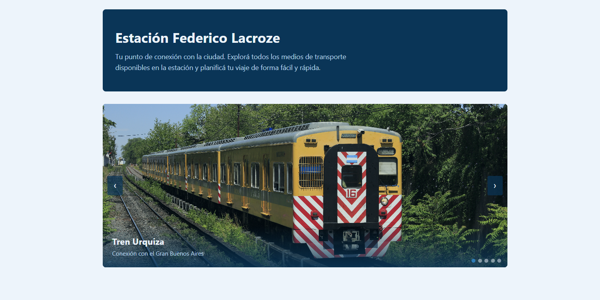
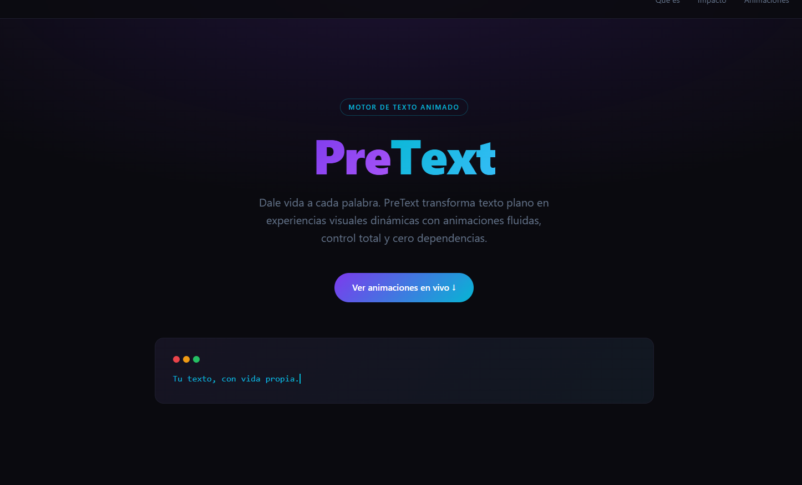
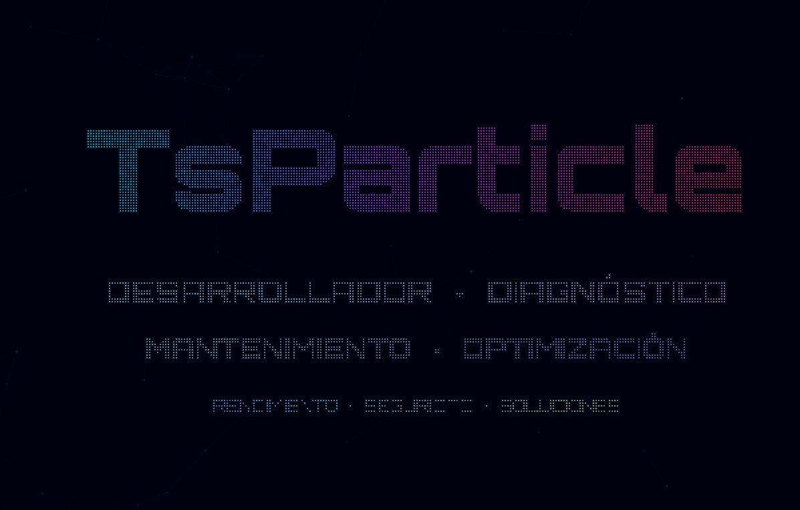

Algunos de los proyectos que desarrollamos. Cada uno es el resultado de un proceso colaborativo donde la tecnología se pone al servicio del negocio.

Landing page
Landing page institucional para una desarrolladora inmobiliaria. Diseño premium, identidad de marca sólida y experiencia orientada a captar inversores.
Ver proyecto →
Sitio institucional
Sitio web para la estación intermodal Lacroze de la Ciudad de Buenos Aires. Información de medios de transporte, galería de imágenes y diseño accesible.
Ver proyecto →
Demo de librería
Demo interactiva de PreText, una librería que transforma texto plano en experiencias visuales dinámicas con animaciones fluidas y cero dependencias.
Ver proyecto →
Demo interactiva
Demostración de las capacidades de ts-particles: efectos visuales de partículas en tiempo real aplicados a interfaces web de alto impacto.
Ver proyecto →Si tenés un proyecto en mente, estamos listos para escucharte. Contanos de qué se trata y armamos una propuesta a medida.
Hablemos de tu proyecto